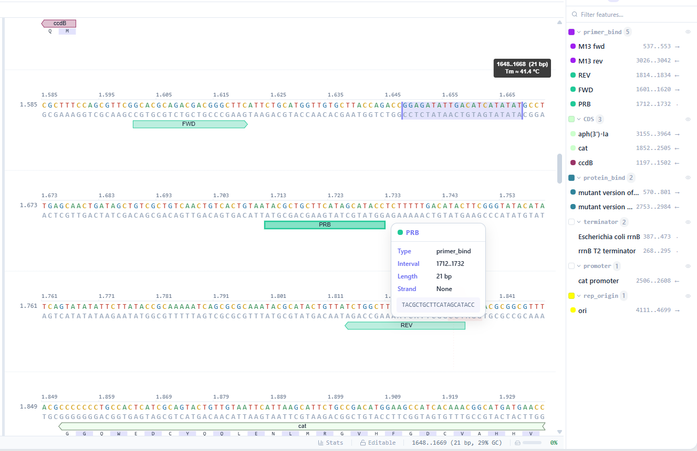
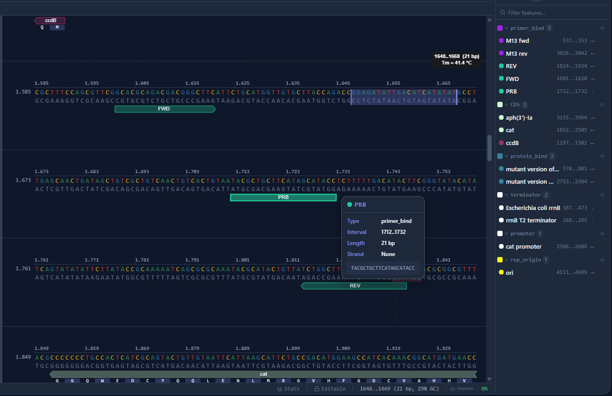

Editing
Sequence editor
Linear and circular DNA in a canvas-rendered editor with undo and redo, find and replace, and live complement display.
Molecular biology workbench
Open a plasmid, read a chromatogram, plan a cloning strategy. Everything is computed on your own machine. No installation, no account, and nothing leaves the device.


The bench
Everything below runs client-side, from short plasmids up to genome-scale sequences.
Editing
Linear and circular DNA in a canvas-rendered editor with undo and redo, find and replace, and live complement display.
Visualisation
Interactive circular view carrying annotations, restriction sites and ORFs. Click any feature to jump to it in the sequence.
Sanger
AB1 and SCF traces with quality scores, base-level editing, trim controls and independent undo history per read.
Annotation
Auto-annotate against a built-in feature database. Six-frame ORF finder with configurable start codons and minimum length.
Cloning
Digest and ligation, Gibson, Golden Gate, Gateway and TOPO. Simulate a strategy across several source sequences before touching a pipette.
Search
Query NCBI databases from inside the editor. Results poll in the background, so the session stays usable while they run.
Comparison
Pairwise global and local alignment plus MSA, with conservation shading, BLOSUM62 protein scoring and Clustal export.
Digestion
Filter the full REBASE enzyme set by cut count, overhang type and commercial availability, then check the result on a simulated gel.
Primers
Nearest-neighbour melting temperatures, penalty scoring and pair finding, with heterodimer and hairpin checks.
Interchange
Drag a file onto the window, or fetch a record straight from NCBI, Addgene or SnapGene.
| Reads |
|
|---|---|
| Writes |
|
| Fetches from |
|
Sessions can be exported whole and reopened on another machine.
This is pDONR221, the Gateway donor vector shown in the editor at the top of this page. The file on the left is what you hand the editor; the panel on the right is what it finds in it.
Input pDONR221.gb
LOCUS pDONR221 4762 bp DNA circular SYN 01-JAN-2026
DEFINITION Gateway donor vector pDONR221, complete sequence.
ACCESSION JA808046
VERSION JA808046.1
KEYWORDS .
SOURCE synthetic DNA construct
ORGANISM synthetic DNA construct
other sequences; artificial sequences; vectors.
FEATURES Location/Qualifiers
source 1..4762
/organism="synthetic DNA construct"
/mol_type="other DNA"
terminator 268..295
/label="rrnB T2 terminator"
terminator 387..473
/label="rrnB T1 terminator"
/note="transcription terminator T1 from the E. coli rrnB gene"
primer_bind 537..553
/label="M13 fwd"
protein_bind 570..801
/label="attP1"
/bound_moiety="lambda integrase"
CDS complement(1197..1502)
/label="ccdB"
/codon_start=1
/product="CcdB, a bacterial toxin that poisons DNA gyrase"
primer_bind 1601..1620
/label="FWD"
primer_bind 1712..1732
/label="PRB"
primer_bind complement(1814..1834)
/label="REV"
CDS complement(1852..2505)
/label="cat"
/codon_start=1
/product="chloramphenicol acetyltransferase"
promoter complement(2506..2608)
/label="cat promoter"
protein_bind complement(2753..2984)
/label="attP2"
/bound_moiety="lambda integrase"
primer_bind complement(3026..3042)
/label="M13 rev"
CDS 3155..3964
/label="aph(3')-Ia"
/codon_start=1
/product="aminoglycoside phosphotransferase, confers kanamycin resistance"
rep_origin 4111..4699
/label="ori"
/note="high-copy-number ColE1/pMB1/pBR322/pUC origin"
ORIGIN
1 ctttcctgcg ttatcccctg attctgtgga taaccgtatt accgcctttg agtgagctga
61 taccgctcgc cgcagccgaa cgaccgagcg cagcgagtca gtgagcgagg aagcggaaga
121 gcgcccaata cgcaaaccgc ctctccccgc gcgttggccg attcattaat gcagctggca
181 cgacaggttt cccgactgga aagcgggcag tgagcgcaac gcaattaata cgcgtaccgc
241 tagccaggaa gagtttgtag aaacgcaaaa aggccatccg tcaggatggc cttctgctta
301 gtttgatgcc tggcagttta tggcgggcgt cctgcccgcc accctccggg ccgttgcttc
361 acaacgttca aatccgctcc cggcggattt gtcctactca ggagagcgtt caccgacaaa
421 caacagataa aacgaaaggc ccagtcttcc gactgagcct ttcgttttat ttgatgcctg
481 gcagttccct actctcgcgt taacgctagc atggatgttt tcccagtcac gacgttgtaa
541 aacgacggcc agtcttaagc tcgggcccca aataatgatt ttattttgac tgatagtgac
601 ctgttcgttg caacacattg atgagcaatg cttttttata atgccaactt tgtacaaaaa
661 agctgaacga gaaacgtaaa atgatataaa tatcaatata ttaaattaga ttttgcataa
721 aaaacagact acataatact gtaaaacaca acatatccag tcactatgaa tcaactactt
781 agatggtatt agtgacctgt agtcgaccga cagccttcca aatgttcttc gggtgatgct
841 gccaacttag tcgaccgaca gccttccaaa tgttcttctc aaacggaatc gtcgtatcca
901 gcctactcgc tattgtcctc aatgccgtat taaatcataa aaagaaataa gaaaaagagg
961 tgcgagcctc ttttttgtgt gacaaaataa aaacatctac ctattcatat acgctagtgt
1021 catagtcctg aaaatcatct gcatcaagaa caatttcaca actcttatac ttttctctta
1081 caagtcgttc ggcttcatct ggattttcag cctctatact tactaaacgt gataaagttt
1141 ctgtaatttc tactgtatcg acctgcagac tggctgtgta taagggagcc tgacatttat
1201 attccccaga acatcaggtt aatggcgttt ttgatgtcat tttcgcggtg gctgagatca
1261 gccacttctt ccccgataac ggagaccggc acactggcca tatcggtggt catcatgcgc
1321 cagctttcat ccccgatatg caccaccggg taaagttcac gggagacttt atctgacagc
1381 agacgtgcac tggccagggg gatcaccatc cgtcgcccgg gcgtgtcaat aatatcactc
1441 tgtacatcca caaacagacg ataacggctc tctcttttat aggtgtaaac cttaaactgc
1501 atttcaccag cccctgttct cgtcagcaaa agagccgttc atttcaataa accgggcgac
1561 ctcagccatc ccttcctgat tttccgcttt ccagcgttcg gcacgcagac gacgggcttc
1621 attctgcatg gttgtgctta ccagaccgga gatattgaca tcatatatgc cttgagcaac
1681 tgatagctgt cgctgtcaac tgtcactgta atacgctgct tcatagcata cctctttttg
1741 acatacttcg ggtatacata tcagtatata ttcttatacc gcaaaaatca gcgcgcaaat
1801 acgcatactg ttatctggct tttagtaagc cggatccacg cggcgtttac gccccgccct
1861 gccactcatc gcagtactgt tgtaattcat taagcattct gccgacatgg aagccatcac
1921 agacggcatg atgaacctga atcgccagcg gcatcagcac cttgtcgcct tgcgtataat
1981 atttgcccat ggtgaaaacg ggggcgaaga agttgtccat attggccacg tttaaatcaa
2041 aactggtgaa actcacccag ggattggctg agacgaaaaa catattctca ataaaccctt
2101 tagggaaata ggccaggttt tcaccgtaac acgccacatc ttgcgaatat atgtgtagaa
2161 actgccggaa atcgtcgtgg tattcactcc agagcgatga aaacgtttca gtttgctcat
2221 ggaaaacggt gtaacaaggg tgaacactat cccatatcac cagctcaccg tctttcattg
2281 ccatacggaa ttccggatga gcattcatca ggcgggcaag aatgtgaata aaggccggat
2341 aaaacttgtg cttatttttc tttacggtct ttaaaaaggc cgtaatatcc agctgaacgg
2401 tctggttata ggtacattga gcaactgact gaaatgcctc aaaatgttct ttacgatgcc
2461 attgggatat atcaacggtg gtatatccag tgattttttt ctccatttta gcttccttag
2521 ctcctgaaaa tctcgataac tcaaaaaata cgcccggtag tgatcttatt tcattatggt
2581 gaaagttgga acctcttacg tgccgatcaa cgtctcattt tcgccaaaag ttggcccagg
2641 gcttcccggt atcaacaggg acaccaggat ttatttattc tgcgaagtga tcttccgtca
2701 caggtattta ttcggcgcaa agtgcgtcgg gtgatgctgc caacttagtc gactacaggt
2761 cactaatacc atctaagtag ttgattcata gtgactggat atgttgtgtt ttacagtatt
2821 atgtagtctg ttttttatgc aaaatctaat ttaatatatt gatatttata tcattttacg
2881 tttctcgttc agctttcttg tacaaagttg gcattataag aaagcattgc ttatcaattt
2941 gttgcaacga acaggtcact atcagtcaaa ataaaatcat tatttgccat ccagctgata
3001 tcccctatag tgagtcgtat tacatggtca tagctgtttc ctggcagctc tggcccgtgt
3061 ctcaaaatct ctgatgttac attgcacaag ataaaataat atcatcatga acaataaaac
3121 tgtctgctta cataaacagt aatacaaggg gtgttatgag ccatattcaa cgggaaacgt
3181 cgaggccgcg attaaattcc aacatggatg ctgatttata tgggtataaa tgggctcgcg
3241 ataatgtcgg gcaatcaggt gcgacaatct atcgcttgta tgggaagccc gatgcgccag
3301 agttgtttct gaaacatggc aaaggtagcg ttgccaatga tgttacagat gagatggtca
3361 gactaaactg gctgacggaa tttatgcctc ttccgaccat caagcatttt atccgtactc
3421 ctgatgatgc atggttactc accactgcga tccccggaaa aacagcattc caggtattag
3481 aagaatatcc tgattcaggt gaaaatattg ttgatgcgct ggcagtgttc ctgcgccggt
3541 tgcattcgat tcctgtttgt aattgtcctt ttaacagcga tcgcgtattt cgtctcgctc
3601 aggcgcaatc acgaatgaat aacggtttgg ttgatgcgag tgattttgat gacgagcgta
3661 atggctggcc tgttgaacaa gtctggaaag aaatgcataa acttttgcca ttctcaccgg
3721 attcagtcgt cactcatggt gatttctcac ttgataacct tatttttgac gaggggaaat
3781 taataggttg tattgatgtt ggacgagtcg gaatcgcaga ccgataccag gatcttgcca
3841 tcctatggaa ctgcctcggt gagttttctc cttcattaca gaaacggctt tttcaaaaat
3901 atggtattga taatcctgat atgaataaat tgcagtttca tttgatgctc gatgagtttt
3961 tctaatcaga attggttaat tggttgtaac actggcagag cattacgctg acttgacggg
4021 acggcgcaag ctcatgacca aaatccctta acgtgagtta cgcgtcgttc cactgagcgt
4081 cagaccccgt agaaaagatc aaaggatctt cttgagatcc tttttttctg cgcgtaatct
4141 gctgcttgca aacaaaaaaa ccaccgctac cagcggtggt ttgtttgccg gatcaagagc
4201 taccaactct ttttccgaag gtaactggct tcagcagagc gcagatacca aatactgttc
4261 ttctagtgta gccgtagtta ggccaccact tcaagaactc tgtagcaccg cctacatacc
4321 tcgctctgct aatcctgtta ccagtggctg ctgccagtgg cgataagtcg tgtcttaccg
4381 ggttggactc aagacgatag ttaccggata aggcgcagcg gtcgggctga acggggggtt
4441 cgtgcacaca gcccagcttg gagcgaacga cctacaccga actgagatac ctacagcgtg
4501 agctatgaga aagcgccacg cttcccgaag ggagaaaggc ggacaggtat ccggtaagcg
4561 gcagggtcgg aacaggagag cgcacgaggg agcttccagg gggaaacgcc tggtatcttt
4621 atagtcctgt cgggtttcgc cacctctgac ttgagcgtcg atttttgtga tgctcgtcag
4681 gggggcggag cctatggaaa aacgccagca acgcggcctt tttacggttc ctggcctttt
4741 gctggccttt tgctcacatg tt
//
What the editor reads from it
| terminator | rrnB T2 terminator | 268..295 |
| terminator | rrnB T1 terminator | 387..473 |
| primer_bind | M13 fwd | 537..553 |
| protein_bind | attP1 | 570..801 |
| CDS | ccdB | 1,197..1,502 ← |
| primer_bind | FWD | 1,601..1,620 |
| primer_bind | PRB | 1,712..1,732 |
| primer_bind | REV | 1,814..1,834 ← |
| CDS | cat | 1,852..2,505 ← |
| promoter | cat promoter | 2,506..2,608 ← |
| protein_bind | attP2 | 2,753..2,984 ← |
| primer_bind | M13 rev | 3,026..3,042 ← |
| CDS | aph(3')-Ia | 3,155..3,964 |
| rep_origin | ori | 4,111..4,699 |
Sequence from GenBank accession JA808046.1. Open the editor and drag the file in to get the same result, plus the circular map, cut sites and ORFs.
Get started
The editor is a single self-contained page. Load it once and it keeps working offline, with your sequences stored on your own device.
Open the editor →